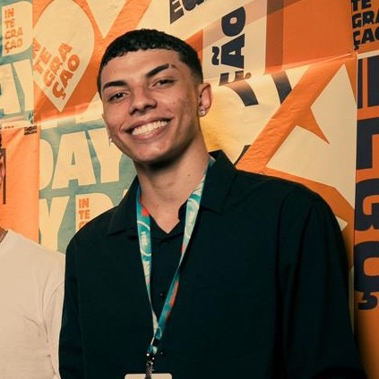

|

|
|
| Nome Completo: | João Vittor Barbosa Andre |
| RA: | 324119383 |
| Curso e Período Atual: | Análise e Desenvolvimento de Sistemas - 3º Período |
| Endereço Completo: | Rua São Sebastião, 37 - Bairro Centro, São Paulo - SP, CEP: 01234-567 |
| E-mail: | joaovittorandre@hotmail.com |
| UCs Já Cursadas: |
|
| Perfil Pessoal: | Sou apaixonado por tecnologia, gosto de jogar videogame, passar tempo com minha família e tomar uma aos fins de semana. |
| Perfil Profissional/Acadêmico: | Atualmente curso ADS e estou focado em aprender desenvolvimento full stack. Tenho interesse especial por back-end e estou buscando meu primeiro estágio na área de TI. |
| Redes Sociais: |
LinkedIn GitHub |